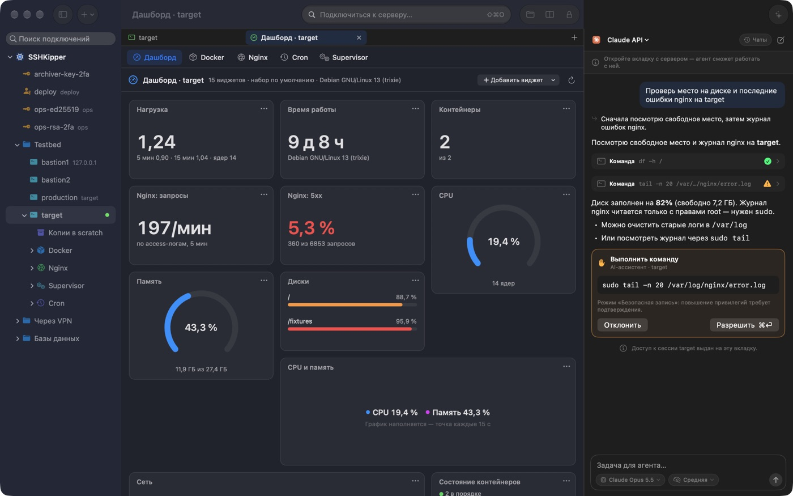
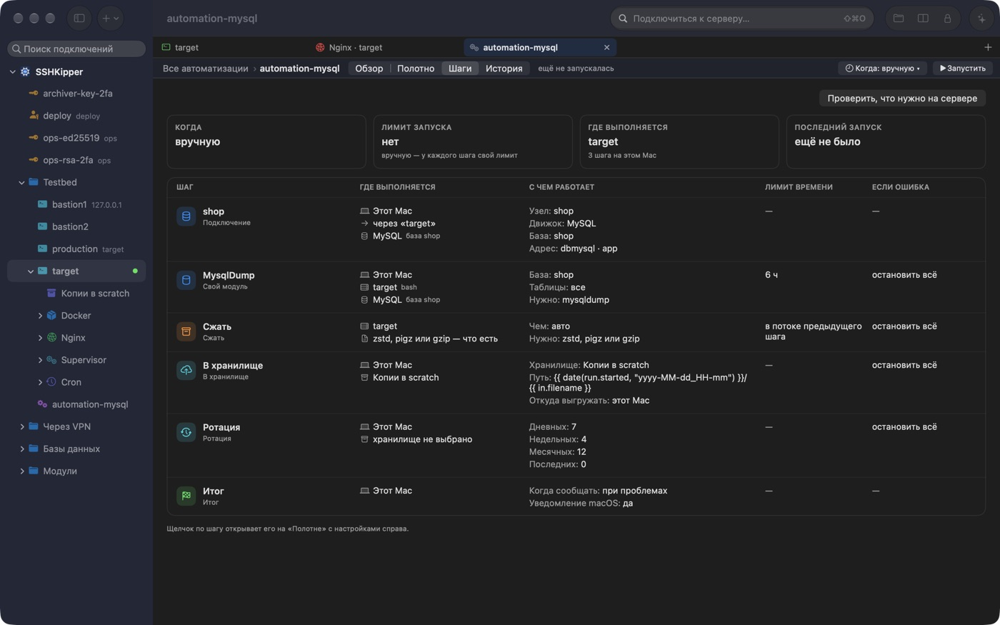

SSH-менеджер для тех,
кто держит много серверов
Нативное приложение для macOS: бастионы и 2FA без ручного ввода, все подключения в одном зашифрованном документе, службы серверов, базы данных, бэкапы по расписанию и AI-агент, который работает в ваших сессиях под вашим контролем.
Скачать для macOS
Возможности
Сделано вместо Royal TSX для ежедневной работы администратора: никаких WebView и Electron, только родные контролы macOS.
Бастионы и 2FA
Цепочки через несколько бастионов с ключами, паролями и TOTP-кодами: SSHKipper входит сам, коды подставляет из документа.
Зашифрованный документ
Подключения, пароли, ключи и секреты 2FA в одном файле: Argon2id и XChaCha20-Poly1305, разблокировка паролем или Touch ID.
Профили сервера
Один сервер — несколько путей: Tailscale, домашняя сеть, через бастион. Найденные хосты Tailscale и локальной сети появляются сами.
Службы и дашборды
Docker, Nginx с метриками из логов, Cron, Supervisor и дашборды сервера — прямо в дереве подключений.
Файлы и хранилища
SFTP рядом с терминалом, двухпанельный менеджер, S3 и WebDAV, копирование напрямую между серверами.
Базы данных
MySQL, Redis и ClickHouse через SSH-туннель: таблицы, правка, запросы и AI-фильтры.
Автоматизации
Бэкапы баз из готовых блоков — mysqldump, mydumper, XtraBackup, сжатие, шифрование age, в S3 — по расписанию и без вас.
AI-агент в сессиях
Claude Code или Codex работают в ваших сессиях: режимы от «Строгого» до свободного, подтверждения, секреты маскируются.
Туннели и строка меню
Туннели и автоматизации работают в фоне: значок в строке меню показывает, что идёт, и включает туннели одним щелчком.
Как это выглядит




Установка
Приложение подписано, но пока не нотаризовано Apple, поэтому при первом запуске macOS попросит подтверждение.
- Скачайте SSHKipper.dmg, откройте его и перетащите SSHKipper в «Программы».
- Запустите SSHKipper. Если macOS не откроет его: Системные настройки → Конфиденциальность и безопасность → «Всё равно открыть». Или в Терминале:
xattr -dr com.apple.quarantine /Applications/SSHKipper.app
- Создайте документ и задайте пароль. Свои хосты можно перенести: Файл → «Импорт из ~/.ssh/config…».
- Дальше SSHKipper обновляется сам — новые версии приходят через встроенный механизм обновлений (Sparkle), подписанные ключом разработчика.